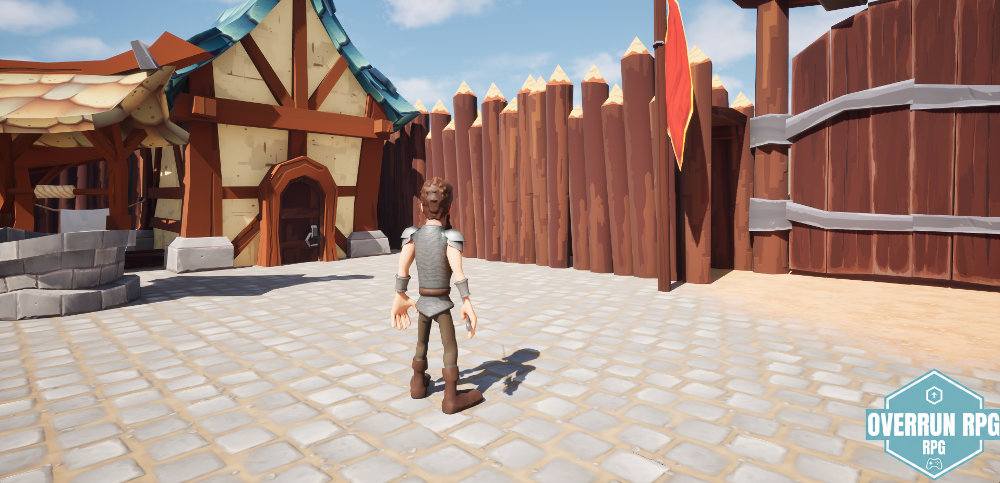
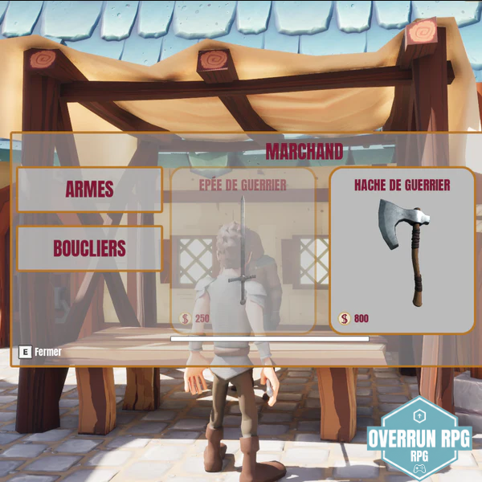

OVERRUN RPG
Production Indépendante par Ryan


💎 SOUTENIR LE DÉVELOPPEMENT
Chaque don permet de financer les serveurs et d'améliorer les graphismes sous Unreal Engine 5. Soutenez l'aventure de Ryan !
FAIRE UN DON À RYAN